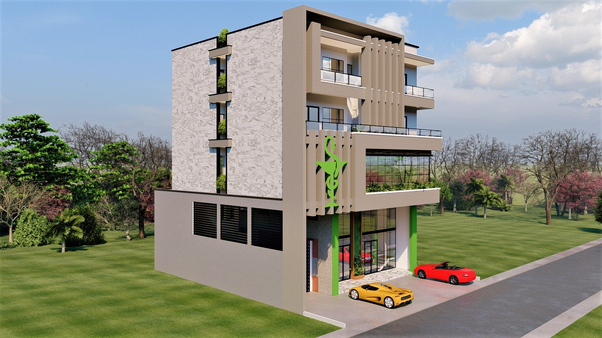
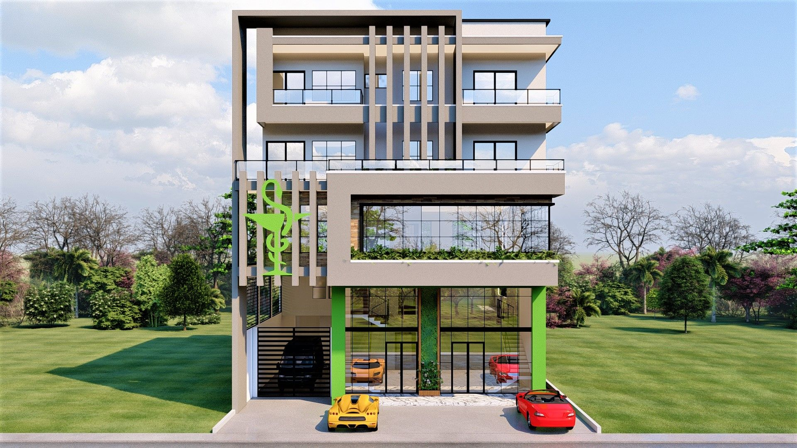
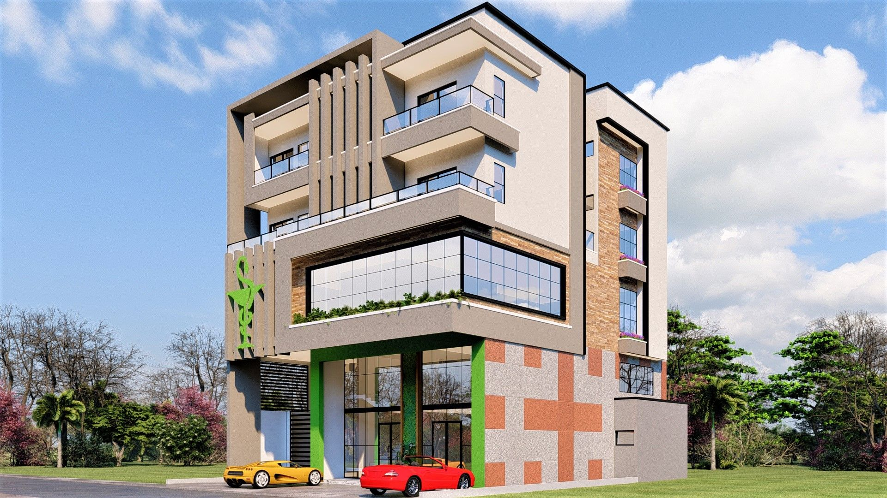
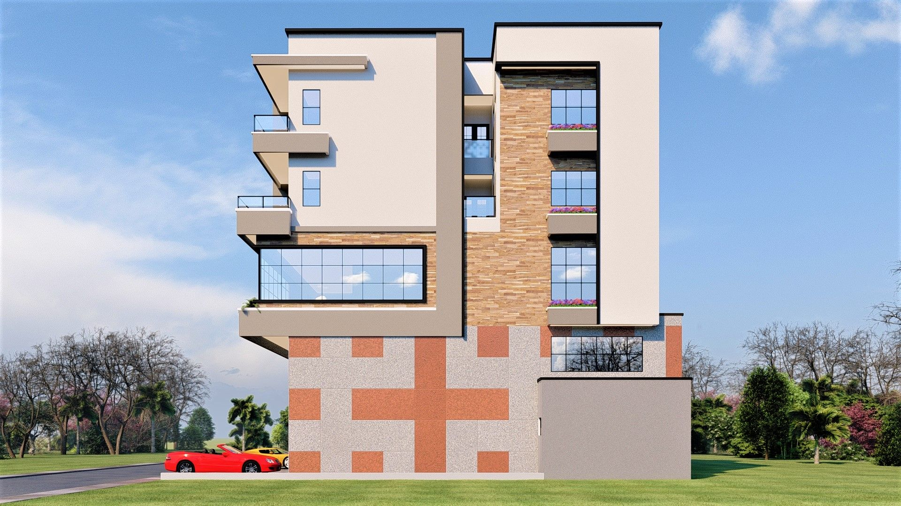

Mixité Urbaine et Lisibilité Commerciale
Ce projet combine un espace de santé (Pharmacie) en rez-de-chaussée avec des unités résidentielles (Studio) aux étages, illustrant une approche pragmatique de la mixité fonctionnelle urbaine. Le défi consistait à concilier la visibilité commerciale nécessaire à la pharmacie et l'intimité requise pour les logements.
La conception utilise un jeu de volumes et de matériaux pour différencier les fonctions tout en maintenant une unité architecturale forte. L'aménagement de la pharmacie privilégie la clarté et l'ergonomie, tandis que les studios optimisent chaque mètre carré pour offrir un confort moderne et lumineux.
Typologie
Mixte (Commerce + Logement)
Programme
Pharmacie (RDC) & Studios (R+1/R+2)
Expertise
Retail & Habitat Compact



